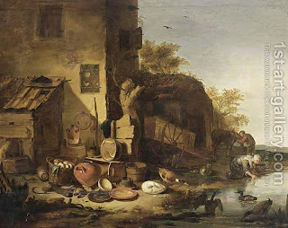

Bava Metzia 35 - A Deposit that was Stolen
If one deposits with another an animal or utensils for safekeeping and they were stolen or lost, the custodian can take an oath that he was not negligent, and free himself from payment. If he did not desire to swear and paid, and then the thief is found, the thief pays the double payment to the custodian.
If one rented a cow and then lent it to another, and it subsequently died a natural death, then the renter is not liable for that, but the borrower is liable to pay to the renter. Rabbi Yossi says that the renter needs to return the value of the cow to the owner.